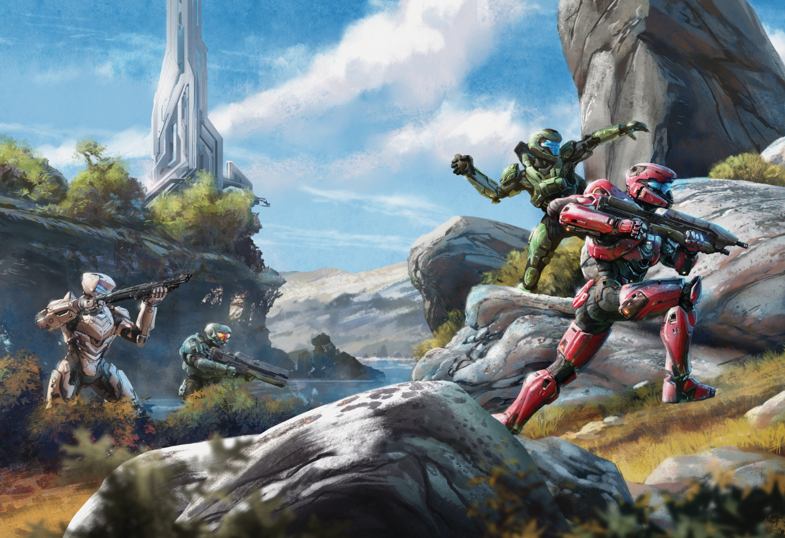
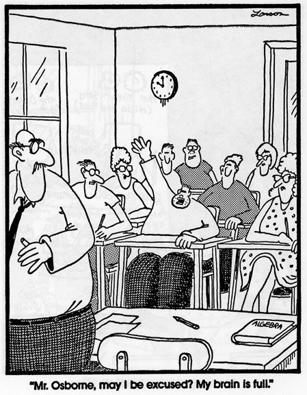
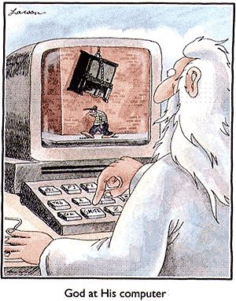
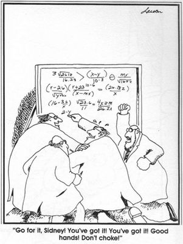
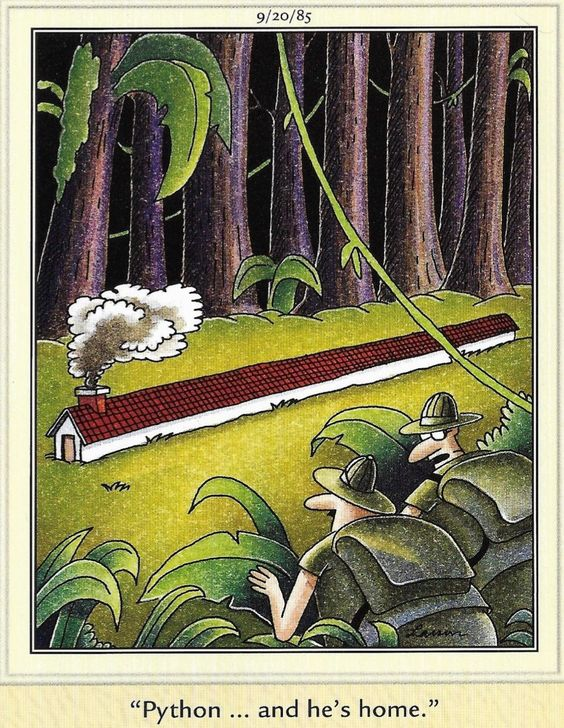

INTRODUCTION

For Presentation at Jacobs High School (Algonquin IL)
May 5, 2017
Advanced Computer Science Class
Teacher: Kevin Christian
Presenter: Tom Krauss
Signal Processing / Software Engineer at
Epiq Solutions (Schaumburg IL)
PhD in Electrical Engineering (Purdue)
Local Dad
LIFE LESSONS

SEE THE BIG PICTURE
PUZZLE: Connect 3x3 points with 4 lines.
Try it now!
Human-created reality (property boundary lines, money, stop lights) versus underlying reality (nature, laws of
physics and biology).
Both are true.
Looking at the "whole system" helps us overcome self-imposed mental limits.
There Is
No "Them".
WORKING WITH OTHERS
Do you want to work with others?
HRT (Humility, Respect, and Trust)
If you expect HRT from others, be fair and extend it to others.
We need and receive so much help from others. Try to help back!
PROGRAMMING

ABOUT COMPUTERS
Transistors: 3-port electronic device made of sand (silicon). Acts as a simple on/off switch. You can put them together to do
"binary" (0/1) operations.
Transistors spent
several decades
shrinking exponentially.
Transistors -> Chips -> Systems -> Networks.
Datacenters.
The internet. That is all. Oh, wait. Smart phones. THAT is all.
ABOUT COMPUTER LANGUAGES
Entire thought process of a computer:
1) fetch next instruction.
2) execute instruction.
3) go to 1).
They do this very very fast (like, billions of times a second - think about a billion for a moment).
"instructions" are just another number to the computer. They tell it to do things like "add these two numbers
together" or "move this number from here to here".
MANY COMPUTER LANGUAGES
Assembly code = language of the computer (sequence of numbers)
Java, Python, C++, ... = language of the human (translated to assembly code)
Many languages exist.
Don't get stuck on Java! Learn more (through doing) and use the right tool for the job. (They
each have different strengths and weaknesses, and
popularity changes over time).
LEARNING TO PROGRAM
Teach yourself programming in 10 years
Source code is king. (what is source code?)
Github is a
huge collection of
"open source" (freely available) source code.
= a great platform for collaborating with others on programs.
Read, study, and absorb ideas from code.
Contribute to projects you care about.
ENGINEERING

SIGNAL PROCESSING
Signals are all around us. Sound. Light.
Computers are great for this. Long list of numbers represents reality.
Great intersection of computer engineering, electrical engineering, and math. My passion.
A good book about DSP online - teach yourself.
(the "D" is for "Digital")
MATLAB and PYTHON
Computer programming languages popular for engineering and science.
Interactive.
Good plotting / graphics capability.
Number crunching.
Fun, easy-to-use languages. Can do alot with a very short (a few lines) program.
Extensive "toolboxes" (collections of
routines that make it easy to do certain stuff).
(Python meme:
"batteries included")
MATLAB
MATrix LABoratory.
Made and sold by
MathWorks in Natick, Massachusetts.
Invented in 1970's by Cleve Moler. Ran on mainframes.
MathWorks founded in 1984. Brought MATLAB to engineers at the
start of the personal computer revolution.
I worked there from 1992-1997 on the Signal Processing Toolbox and other stuff.
PYTHON
Made and given away by
open source community.
Invented in 1990's by Guido van Rossum.
For engineering: python is general purpose.
Great add-ons for engineering (numpy, scipy, matplotlib or bokeh).
I switched from MATLAB to PYTHON in 2006 or so.
PYTHON SESSIONS

THE END